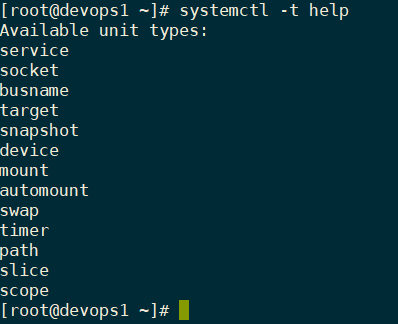

第九章 控制服务与守护进程
目标：
- 使用Systemd控制与监控网络服务，以及系统守护进程。
章节：
- 识别自动启动的系统进程
- 控制系统服务
第一节：识别自动启动的系统进程
目标：
- 完成本节后，学生应该能列出由systemd服务启动的系统守护进程与网络服务，
以及套接字单元。
systemd简介：
- systemd daemon（守护进程）管理Linux的启动，包括服务的启动和管理。
- systemd可在系统引导时以及运行中的系统上激活系统资源、服务器守护进程和其他进程。
- 守护进程（daemon）是在后台运行或等待的进程，以执行不同的任务。
- 通常守护进程在系统启动时运行，直到关机时才结束运行。
- 守护进程程序名称一般会有 d 字符结尾。
- systemd中的service通常指一个或多个守护进程。
- RHEL 7/8中，PID 1是systemd，提供以下几项功能：
1. 并行化功能（同时启动多个服务），可提高系统的启动速度。
2. 按需启动守护进程，而不需要单独的服务。
3. 自动服务依赖关系管理，可以防止超时（timeouts）。
如，只有在网络可用时，依赖网络的服务才会尝试启动。
4. 利用Linux CGroups（控制组）追踪相关进程资源占用。
* 注意：
1. 使用systemd作为系统管理进程的其他主流Linux发行版：
a. SuSE 12 SP3/4、SuSE 15
b. Ubuntu LTS 16.04/18.04/18.06
描述服务单元：service unit
- systemd使用单元（units）管理不同类型对象，常见的单元类型包括：
1. .service：系统服务，这种单元用于启动经常访问的守护进程，如httpd.service。
2. .socket：systemd监控的进程间通信（IPC）socket。
如果客户端连接socket，systemd将启动一个守护进程并将连接传递给它。
socket unit用于延迟系统启动时的服务启动，或者按需启动不常使用的服务。
3. .path：特定文件系统更改发生之后，服务才激活，如打印系统。
- 单元被systemctl命令管理。
- $ systemctl -t help：显示所有可用单元

列出服务单元：
- $ systemctl list-units --type=service
# 该命令默认只列出加载进内存，并为激活状态的服务单元。
1. --type=选项指定单元类型，也可指定socket等单元类型。

$ systemctl list-units --type=service --all
# 列出已加载进内存的所有状态的服务单元
$ systemctl list-units --type=service --all --state=[loaded|active|running|...]
# 列出已加载进内存的所有状态的服务单元，并根据指定的state状态筛选服务单元。
# --state选项可根据LOAD、ACTIVE、SUB中的字段筛选服务单元
- $ systemctl list-unit-files --type=service
# 查看所有已安装的服务单元文件状态
# systemctl list-units命令只能查看加载进内存的服务单元状态，不能查看已安装
但为启用的单元文件状态。

查看服务状态：
- $ systemctl status name.type：查看指定的服务状态

- 服务单元信息：

- systemctl命令输出服务状态：


验证服务状态：
- $ systemctl is-active <name.type>：查看服务是否正在运行
- $ systemctl is-enabled <name.type>：查看服务是否开机自启动
- $ systemctl is-failed <name.type>：查看服务是否启动失败
- $ systemctl --failed --type=service：列出所有失败的单元units
- systemd相关帮助文档：
$ man systemd
$ man 5 systemd.unit
$ man 5 systemd.service
$ man 5 systemd.socket
$ man systemctl
* 注意：systemd守护进程在Linux中的地位

练习 P293：IDENTIFYING AUTOMATICALLY STARTED SYSTEM PROCESSES
第二节：控制系统服务
目标：
- 完成本节后，学生应该能使用systemctl控制系统守护进程与网络服务。
启动与停止服务：
- $ systemctl start <name>.service：启动服务
- $ systemctl start <name>：如果不指明单元类型，默认使用service类型。
- $ systemctl stop <name>.service：停止服务
重新启动与重新加载服务：
- $ systemctl restart <name>.service：重启服务
- $ systemctl reload <name>.service：重载服务（无需重启）
1. 重载服务只加载更改的服务配置文件至内存，而不终止该服务进程，进程PID保持不变。

2. 若在/usr/lib/systemd/system/<name>.service中具有 ExecReload= 参数，可重载该服务。
- $ systemctl restart-or-reload <name>.service：优先重载服务，不行则重启服务。
列出单元依赖关系：
- 有些服务要求首先运行其它服务，因此需要创建依赖项。
- 服务可能并不在系统引导时启动，而是仅在需要时启动。
- systemd和systemctl可以根据需要启动服务及其依赖的服务。
- $ systemctl list-dependencies <unit>：列出单元unit的依赖关系
- $ systemctl list-dependencies <unit> --reverse：列出单元unit的反向依赖关系

屏蔽未屏蔽的服务：masking and unmasking
- 系统中的不同服务可能会彼此冲突，如postfix和sendmail。
- systemctl mask命令屏蔽服务，可防止管理员意外启动与其他服务冲突的服务。
- 屏蔽操作会创建指向/dev/null文件的链接，该文件可阻止服务启动。

* 注意：
1. 禁用（disabled）的服务只是不在系统引导时启动，可以手动或由其他单元unit文件启动。
2. 屏蔽的服务无法手动启动或自动启动，需取消屏蔽后才可启动。

- $ systemctl unmask <name>.service：取消屏蔽服务
开机启动或不启动服务：
- $ systemctl enable <name>.service：设置服务开机自启动
- $ systemctl disable <name>.service：设置服务开机不自启动
- $ systemctl is-enabled <name>.service：查看服务是否开机自启动

- $ systemctl -f enable multi-user.target：开机自动进入命令行（CLI）界面
- $ systemctl -f enable graphical.target：开机自动进入图形化（GUI）界面
systemctl命令总结：
- 如下表所示：

参考链接：
IBM：浅析Linux初始化init系统

systemd入门教程：命令篇
systemd入门教程：实战篇
练习 P301：CONTROLLING SYSTEM SERVICES
Lab P305：CONTROLLING SERVICES AND DAEMONS